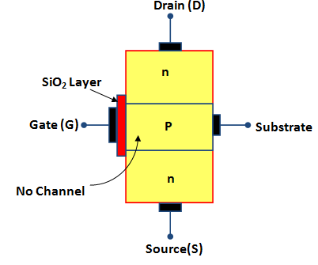

The Field Effect Transistor abbreviated as FET is an another semiconductor device like a BJT which can be used as an amplifier and switch.
Like BJT, FET is also a three terminal device; however, the principle of operation of FET is completely different from that of BJT.
The three terminals of FET are named as Drain (D), Source (S) and Gate (G). Out of these three terminals gate terminal acts as controlling terminal.
In BJT the output current, Ic is controlled by the base current Ib, Hence BJT is a current controlled device.
On the other hand, in FET, the voltage applied between gate and source (VGS) controls the drain current ID, therefore, FET is a voltage controlled device.
The name "field effect" is derived from the fact that output current flow is controlled by an electric field setup in the device by an externally applied voltage between gate and source terminals.
Types of FET
Junction Field Effect Transistors (JFETs)
Metal semiconductor Field Effect Transistors (MESFETs)
Metlal Oxide Semiconductor Field Effect Transistors (MOSFETs)
MOSFETs
The metal-oxide semiconductor FET, or MOSFET. has a source, gate, and drain. The MOSFET differs from the JFET, however, in that the gate is insulated from the channel. Because of this, the gate current is even smaller than it is in a JFET. The MOSFET is sometimes called an IGFET, which stands for insulated-gate FET.
Types of MOSFETs
Enhancement-mode MOSFETs - widely used in both discrete and integrated circuits. In discrete circuits, the main use is in power switching, which means turning large currents on and off. In integrated circuits, the main use n in digital switching, the bane process behind modern computer.
Depletion-mode MOSFETs - Although their use has declined, they are still found in high-frequency front-end communications circuits as RF amplifier.
Depletion-Mode MOSFET:
D-MOSFET
The figure above shows a depletion-mode MOSFET, a piece of n material with an insulated gate on the left and a p region on the right. The p region is called the substrate.
Electrons flowing from source to drain must pass through the narrow channel between the gate and the p substrate.
A thin layer of silicon dioxide (SiO2) is deposited on the left side of the channel. Silicon dioxide is the same as glass, which is an insulator.
In a MOSFET, the gate is metallic. Because the metallic gate is insulated from the channel, negligible gate current flows even when the gate voltage is positive.
The figure(a) given below shows a depletion-mode MOSFET with a negative gate voltage. The VDD supply forces free electrons to flow from source to drain.
These electrons flow through the narrow channel on the left of the p substrate. As with a JFET, the gate voltage controls the width of the channel.
The more negative the gate voltage, the smaller the drain current. When the gate voltage is negative enough, the drain current is cut off.
Therefore, the operation of a depletion-mode MOSFET is similar to that of a JFET when VGS is negative.
Since the gate is insulated, we can also use a positive input voltage, as shown in the figure.
The positive gate voltage increases the number of free electrons flowing through the channel.
The more positive the gate voltage, the greater the conduction from source to drain.
D-MOSFET with negative gate
D-MOSFET with positive gate
Enhancement-Mode MOSFET:
The depletion-mod MOSFET was part of the evolution toward the enhancement-mode MOSFET, abbreviated E-Mosfet. Without the E-MOSFET, the personal computers that are now so widespread would not exist.
Basic Idea

Unbiased E-MOSFET
Biased E-MOSFET
The figure1 above shows an E-MOSFET. The P substrate now extends all the way to the silicon dioxide. As you can see, there no longer is an n channel between the source and the drain.
The figure 2 shows normal biasing polarities. When the gate voltage is zero, the current between source and drain is zero. For this reason, an E-MOSFET is normally off when the gate voltage is zero.
The only way to get current is with a positive gate voltage.
When the gate is positive, it attracts the free electrons into the p region. These free electrons recombine with the holes next to silicon dioxide.
When the gate voltage is positive enough, all the holes touching the silicon dioxide are filled and the free electrons begin to flow from the source to drain.
This effect is same as creating a thin layer of n-type material next to the silicon dioxide.
This thin conducting layer is called the n-type inversion layer. When it exists, free electrons can flow easily from the source to drain.
The minimum VGS that creates the n-type inversion layer is called the threshold voltage, symbolised VGS(th).
When VGS is less than VGS(th), the drain current is zero.
When VGS is greater than VGS(th), an n-type inversion layer connects the source to the drain and the drain current can flow.
Typical values of VGS(th) for small signal devices are from 1 to 3 V.
Key point:
The JFET is referred as a depletion-mode device because its conductivity depends on the action of the depletion layers.
The E-MOSFET is classified as an enhancement-mode device because a gate voltage greater than the threshold voltage enhances its conductivity.
With zero gate voltage, a JFET is on, whereas an E-MOSFET is off. Therefore, the E-MOSFET is considered to be a normally off device.
Drain curves:
Drain curves of N-channel Enhancement type MOSFET
A small-signal E-MOSFET has a power rating of 1W or less. The figure(b) above shows a set of drain curves for a typical E-MOSFET. The lowest curve is the VGS(th) curve.
When VGS is less than VGS(th), the drain current is approximately zero. When VGS is greater than VGS(th) the device turns on and the drain current is controlled by the gate voltage.
The almost-vertical part of the graph is the ohmic region, and the almost-horizotal parts are the active region.
When biased in the ohmic region, The E-MOSFET is equivalent to a resistor.
When biased in the active region, it is equivalent to a current source.
Although, the E-MOSFET can operate in the active region, the main use is the ohmic region.
The figure(a) above shows a typical transconductance curve. There is no current until VGS = VGS(th).
The drain current then increases rapidly until it reaches the saturation current ID(sat). Beyond this point, the device is biased in the ohmic region.
Therefore, ID cannot increase, even though VGS increases.